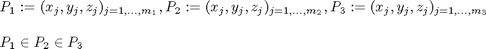
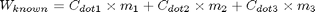

calunknownweight
Description: this function calculated the weighted amount of known info. it uses the GetImpLevInfo() function to break up known points into their areas
Contents
Function Call
Inputs: NULL
Returns: NULL
function knownweight = calknownweight()
Variables
global workspace
Get known point matrices P, in Lev 1->3

%remember level 1 is inside level 2 and 3 and level 2 is inside level 3
[level1_kn,level2_kn,level3_kn]=GetImpLevInfo(workspace.knowncoords);
Multiply by weighting

%this is the difference in weighted unknown points knownweight=(size(level1_kn,1)*workspace.dotweight(1)+... size(level2_kn,2)*workspace.dotweight(2)+... size(level3_kn,3)*workspace.dotweight(3));